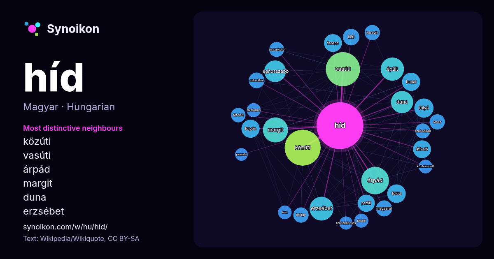

Magyar · a nap szavainak listája
híd
“bridge” · A körülötte talált szavak 1384 wikipédiás előfordulásból, Wikiquote.

Legjellegzetesebb szomszédok
- közúti 79×
- vasúti 56×
- árpád 51×
- margit 40×
- duna 32×
- erzsébet 32×
- leghosszabb 30×
- átívelő 25×
- folyón 24×
- budai 23×
- petőfi 20×
- szlovákul 20×
- мост 19×
- bridge 19×
- köti 18×
- fölött 18×
- átadott 17×
- kossuth 17×
- podul 16×
- összekötő 16×
× = hányszor gyakoribb, mint az általános wikipédiás szövegben.
Leggyakoribb szomszédok
- közúti 105
- vasúti 95
- árpád 62
- margit 51
- erzsébet 46
- található 45
- épült 44
- régi 44
- duna 40
- leghosszabb 38
- folyó 30
- fölött 28
- budai 27
- folyón 27
- átívelő 26
- ferenc 26
- budapest 25
- petőfi 24
- világ 24
- déli 22
Szövegkörnyezetben
- Traianus hídja – római híd a Dunán, csak romokban Kápolna-híd (Kapellbrücke) (1993 ban egy része leégett) Chengyang-híd Kína, Don régió Alcántara-híd Spanyolország Wikipedia snippets · Híd
- A Megyeri híd (nem hivatalosan az M0-s északi Duna-hídja) közúti híd a Duna felett, mely Újpestet köti össze Budakalásszal a Szentendrei-szigeten keresztül Wikipedia snippets · Megyeri híd
- A Most–Híd (ejtsd: moszt–híd; szlovák–magyar elnevezés: a szlovák most szó magyarul ’hidat’ jelent) szlovákiai párt volt. 2021-ben beolvadt a felvidéki Wikipedia snippets · Most–Híd
- budapesti Margit híd a Szent István körutat és a Margit körutat köti össze a Margit-sziget érintésével. A főváros második állandó hídjaként 1872 és 1876 között Wikipedia snippets · Margit híd
- Szabadság híd (korábban Ferenc József híd, Fővám téri híd, Vámház téri híd) Budapest egyik, 1896-ban, a főváros harmadik közúti átkelőjeként átadott hídja, Budapest Wikipedia snippets · Szabadság híd
- A Zielinski híd (1994 előtt: Millenniumi híd) a Városligetben található fémszerkezetű híd, ami a Kós Károly sétányt köti össze a Hősök terével a Városligeti-tó Wikipedia snippets · Zielinski híd
- A Petőfi híd (1937-1945 között: Horthy Miklós híd) Budapest egyik Duna-hídja. 1933–1937 között építették, a pesti és budai körút déli szakaszainak villamos- Wikipedia snippets · Petőfi híd
- Az Újpesti vasúti híd (a köznyelvben néha – helytelenül – Északi összekötő vasúti híd) Budapest egyik vasúti Duna-hídja, amely a Népsziget felett is átvezet Wikipedia snippets · Újpesti vasúti híd
További szavak
Előre kiszámítva: 2026-10-09, alapbeállításokkal (±5 szó, közepes korpusz). Az interaktív térkép élő adatokkal frissítheti.
Gépi fordítású felület; a javításokat szívesen fogadjuk.